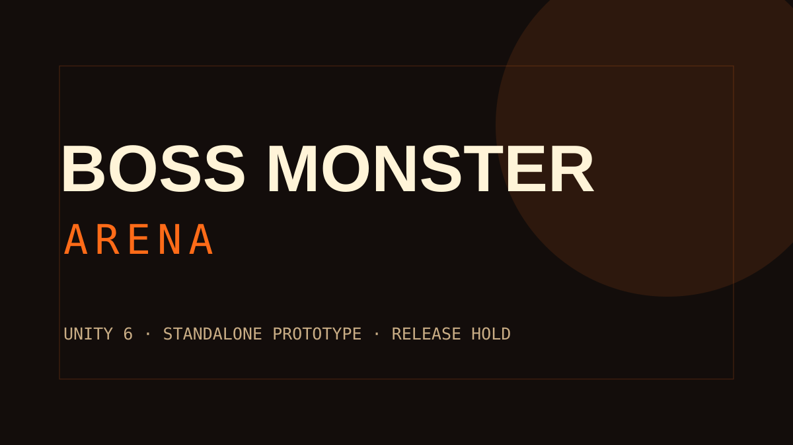

괴수별 이동
날개형 비행과 지상형 점프·돌진을 같은 아레나 규칙 위에서 구분합니다.
LOCAL PROTOTYPE WINDOWS · UNITY 6
거대 괴수가 되어 야생 생태와 사냥꾼의 압박 속에서 비행·회피·콤보·브레스·고유 영역기를 운용하는 독립 실행형 아레나 프로토타입입니다.

지상과 공중 이동, 스태미나, 방향 회피, 강공격 콤보와 브레스에 생태·먹이·사냥꾼·레이드 시스템을 결합했습니다.
날개형 비행과 지상형 점프·돌진을 같은 아레나 규칙 위에서 구분합니다.
근접 콤보, 공중 급강하, 브레스와 네 개의 전술/고유 기술을 운용합니다.
야생 생태, 먹이와 사체, 사냥꾼 투사체 및 레이드 흐름이 전장 상태를 바꿉니다.
규칙 EditMode 테스트와 독립 실행형 배치 스모크 경로를 마련했습니다.